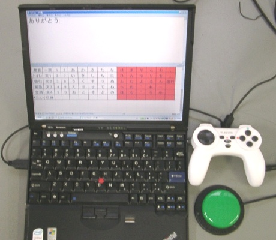

かならずお読みください →

しゃべる文字盤のつくりかた
TIPS_3 キー入力を読み取る方法

第1回と第2回で、パソコン画面にいろいろ表示する方法といろいろな音を出す方法について説明してきました。いずれも、パソコンから人間に向かって伝える働きです。 コミュニケーションエイドの目的は、使う人の意思をパソコン経由で他の人に伝えることですので、まずはじめに意思をパソコンに伝える必要があります。これまでの話と伝える方向が反対です。
コミュニケーションエイドをお使いになる方のほとんどは、言葉や運動などいろいろ不自由で、その限られた方法で動かすスイッチでコミュニケーションエイドを操作することになります。 伝の心やレッツチャットでは操作スイッチのプラグを所定のジャックに差し込めば使えるように作られています。 しかし通常のパソコンにはそのような仕組みは備わっていません。このままでは特殊スイッチを利用できません。
この問題をできるだけお金をかけずに解決する方法を調べてみました。 その結果、キー操作で動くコミュニケーションエイドを作り、 別のスイッチ操作をキー操作に変換するソフトでこれを動かすのがよいことがわかりました。
TIPS3ではこの2点について説明します。
手始めの作業
パソコンゲームなどでは、特定のキーを押せば画面が動いたり、音が出たりします。 ではエクセルVBAでそれができるか、自分で同様のことができるかを調べてみました。例によって、『Excel VBA キー入力』で検索です。 その結果、WindowsAPI関数のGetAsyncKeyStateを使えば、押されたキーを判定できそうだとわかりました。（また今回の目的とは違いますが、キー入力をVBAから送信する方法もあることもついでにわかりました。）
続いて、GetAsyncKeyStateをキーワードにして検索すると、解説記事がいくつか見つかりました。あれこれ見て回ると徐々にやり方がわかって来ました。ある程度自信がでてきたところで、簡単なソフトを作って動かして確認しました。 私の場合、おおよそこのような手順で準備したのち、しゃべる文字盤に機能をひとつづつ追加して行きました。
前回、音を鳴らすのに、WindowsAPI関数のPlaySoundを使いました。同じくWindowsAPI関数の、GetAsyncKeyStateを使って、押されたキーを判定できます。 下記のサンプルは、f9を押すと音がなり、ESCを押すと別の音が鳴り終了する例です。
Declare Function PlaySound Lib "winmm.dll" Alias "PlaySoundA" _ (ByVal lpszName As String, ByVal hModule As Long, ByVal dwFlags As Long) As Long Declare Function GetAsyncKeyState _ Lib "user32.dll" (ByVal vKey As Long) As Long Declare Sub Sleep Lib "kernel32" (ByVal dwMilliseconds As Long) Sub Sample() 'サンプルサブルーチン Do DoEvents Sleep 200 ' CPU負荷軽減のためSleep(200ms)API関数 If GetAsyncKeyState(vbKeyF9) <> 0 Then PlaySound "c:\windows\media\windows ding.wav", &H0, &H0 '同期で音を鳴らす End If If GetAsyncKeyState(vbKeyEscape) <> 0 Then PlaySound "c:\windows\media\chord.wav", &H0, &H0 '同期で音を鳴らす Exit Do End If Loop End Sub1-2行 前回と同じく、PlaySoundの宣言文です。音を鳴らす際に使います。
3-4行 GetAsyncKeyStateの宣言文です。
5行 WindowsAPI、Sleepの宣言文です。
9-21行 Do-Loopの間を繰り返し実行します。
13-15行 GetAsyncKeyStateでf9が押されたか判定し、押されたならばwindows ding.wavを鳴らします。DoLoopを繰り返します。
17-20行 GetAsyncKeyStateでESCが押されたか判定し、押されたならばchord.wavを鳴らし、DoLoopから抜けます。
補足説明
はじめは、5,10,11行はありませんでした。 なくても目的の動作はします。しかし何回かテストを繰り返すと、 パソコンの冷却ファンが回り始めます。随分発熱しているようです。不審に思い タスクマネージャでCPU使用量を見ると100%でした。
こんな簡単なものですから原因はDoLoopの爆走とわかります。そこで Office TANAKA - Excel VBA Tips[CPUの使用率を抑える方法] を参考に、3行追加したらすっきり解決しました。
いまどきのパワフル？なCPUではこんなこともおきる（できる）ことがわかりました。以後類似のループには同様の対策をすることにしました。
しゃべる文字盤では、操作入力にf9キーを使っています。なぜ、f9なのかを説明します。
エクセルには多くの予約キー（既に機能が割り振られているキー、ファンクションキーやショートカットキー。例えばf1キーを押すとヘルプが開くなど）があります。 しゃべる文字盤では、エクセルから他のソフトを起動することもあり、それらにも予約キーが設定されていることがあります。
これらの予約キーと重複しない空いているキーを探した結果、f9キーをしゃべる文字盤の操作に利用することにしました。
（参考 エクセルの予約キー http://office.microsoft.com/ja-jp/excel-help/HP010073848.aspx）
以上で、キーが押されたことを判定することができるようになりました。
次は後半の話題です。
コミュニケーションエイドを必要とする人のほとんどは、上で説明したf9キーで動くプログラムでは困ります。
それぞれのお体の事情に合わせて、使いやすいスイッチを使われます。後半はこのスイッチをパソコンにつなぎ、f9キーと同じことをさせる方法について説明します。この問題は実はパソコンゲーム愛好家の皆さんの熱意と努力によってすでにほとんど解決されています。
任天堂やSonyはゲーム機とともにゲームを販売しています。これとは別にパソコン用のゲームソフトも多くの種類が出回っており、かなりの数の愛好者がいます。 しかしこのページのはじめにも書きましたが、パソコンにはゲームコントローラなど標準で付属していません。また多くのパソコンゲームが、マウスやキーボードをつかって操作するように作られています。 しかしキーボードやマウスでは操作性が劣るために、高得点が期待できません。 ここに高得点が出せるゲームパッドをパソコンゲームでも使いたいという強い需要が出現しました。
これをうけ数多くのパソコン用ゲームパッドが市販され、またボタン操作を任意のキー入力に変換するソフトが何種類か開発されました。そのなかにはフリーでも公開されるものまででて来ました。このように愛好家がゲームにかけるエネルギはあなどれません。この社会的資源をコミュニケーションエイドに活用できるとかなり助かります。
もし、工作に自信があればゲームパッドで作るパソコン入力装置を参考にしてください。時間とお金の節約ができるかもしれません。（上記写真参照）
もし工作が苦手でも費用に余裕がある場合には、 『できマウス。』（http://dekimouse.org/wp/） という商品も市販されていますのでご検討ください。
まとめ
TIPSの1‐3回で画面の表示と音の再生と操作入力というコミュニケーションエイドの基本的機能について説明しました。
これらはゲームにおいても主要な基本的機能です。このためプログラムについて調査していると色使いや広告が特徴的なゲーム関係のサイトにたどり着くことがよくあります。また外部スイッチをパソコンとつなぐ方法を紹介しましたが、利用するのがゲームパッド、ボタンをキーに変換するソフトもゲーム用です。多くの人々の努力によって積み上げられたこれらのゲーム資源、資産を利用してしゃべる文字盤が作られています。今さらながら関係する皆さんには感謝したいと思います。
このようにコミュニケーションエイドは意外にも作り方がゲームと似ています。 また目に見えるものを表示し耳に聞こえるものを出し、それを見聞きしている人とやり取りするのですから、このページの内容が教育教材の分野へも応用できるのではないかと思われます。関心のある方はぜひ取り組んでいただきたいものです。
このページは、パソコンという道具の使いかたを説明しています。この道具を何に使うかは皆さん次第です。大型家電量販店のゲームパッド売り場の品揃えや、ゲーム関係のサイトの多彩さをみると、その市場の巨大さと裾野の広さには正直なところ驚かされます。ゲームの世界の活気がうらやましく思えることもありますが、小さいなら小さいなりにコバンザメのように余録をもらいながらしぶとく生きていくのがよろしいのかもしれません。
2014/6/14 公開研究企画課リハ工学科にもどる